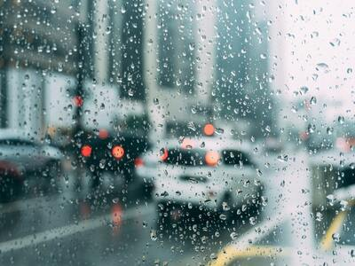

Fish Heaven, Idaho
Weather Summary
Currently:
High:
Wind Chill:
Humidity:
Wind Speed:
5 Day Forecast
Upcoming Events
What is Happening in Fish Haven?
Pack your bags! Honestly the fun begins here in the valley. Nothing like a sunrise or sunset here in the valley! Waking up and capturing a sunrise through the lens is the best. But what’s great is we still have some warmer days where you can go on the lake and go fishing from land or in a boat. Love going across the lake in a boat! Nothing like catching a bear lake Monster! Just kidding! Catching a beautiful cutthroat is fantastic! My personal favorite is rainbow trout. They are so beautiful! But if you’re not wanting to boat and want to keep your feet on land no worries! Montpelier Reservoir, Cisco Beach, Rainbow Cove, casting from shore off the marina or North Beach area are great places to go fishing. If you have kiddies and or anyone who needs easy access, there is fishing the pond in Montpelier or Garden City pond as well! Both are planted with fish! Make sure you read the current fishing report on https://bearlake.org/fishing/ the fishing report will help you with tips on what to use to get your best fishing adventure!

Forecast Now
9999 NE 88th St
Bothell, WA, 98011
425-999-9999
contact@forecastnow.us